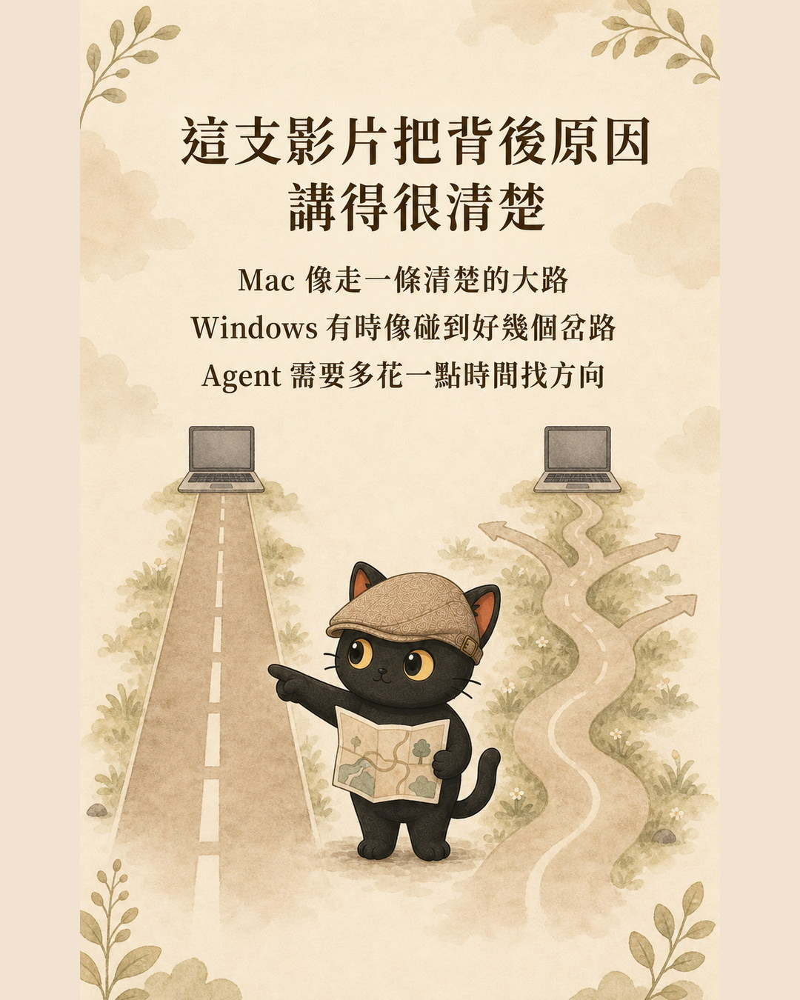

這篇在講什麼
如果你想開始學 Agent，又正在選第一台比較適合的電腦，我通常會先推薦 Mac。這個建議有前提，也有例外。這篇把選擇方式整理成三個簡單問題，讓你不用先懂一大堆專有名詞。
- 第一次接觸 Agent，希望少花一點時間處理安裝問題的人。
- 正在 Mac 與 Windows 之間選設備的人。
- 已經有 Windows，想知道自己需不需要換電腦的人。
- 一個有前提的設備選擇建議。
- 三個不需要技術背景的判斷問題。
- 一段可直接交給 Agent 的安全排錯指令。
先說我的結論
想學 Agent，而且常用軟體在 Mac 上都能使用，我會先推薦 Mac。
如果你已經很會排除電腦問題，繼續用 Windows 也沒有問題。Windows 能做的事情很多，有些工作還會需要特定的 Windows 軟體或設備。這時候就應該照自己的工作需求選。
這是我幫大約 50 個人安裝後的心得
這段時間，我累積幫大約 50 個人安裝過 Agent，也協助他們搭建 AI 辦公室。
我的實際心得是，Windows 比較常冒出一些奇奇怪怪的小 Bug。有時候是安裝位置不同，有時候是同一個指令換一個地方就不能用，也可能是 Agent 以為自己走在這條路，電腦實際上走的是另一條路。
如果使用者本來就會自己排除，這些問題通常都能處理。麻煩的是，新手原本想學怎麼交代 Agent 做事，最後卻把大半時間花在找錯誤。
Mac 偶爾也會出問題，但我遇到的情況裡，多數時候只要跟 Agent 說：「幫我找找別人怎麼處理，然後你自己處理。」它通常就會自己查資料、比對做法，再往下修。
- 桌面版和開發者版差在哪？：網頁聊天型 AI 與桌面幹活型 AI 的分界（Codex） 這篇談設備選擇，那篇先把聊天型 AI 與會在電腦裡幹活的 Agent 分清楚。
把 Agent 想成剛到職的新助理
你交代任務之後，它會去工具櫃拿東西、走到工作區、完成一個步驟，再回來看結果。走錯了，它會再換一條路。
門牌、工具櫃與走道的位置比較固定。新助理第一次進來，也比較容易照著別人的經驗找到東西。
同一種工具可能放在不同房間，門牌也可能有不同寫法。熟悉的人走得很快，新助理第一次來會多試幾扇門。
所以我把它畫成兩條路。Mac 像一條比較清楚的大路；Windows 有時會出現好幾個岔路；Agent 需要多花一點時間判斷現在站在哪裡。

影片把背後原因講得更完整
我看到的原影片來自 YouTube 頻道「科技爱好者」。影片作者的解釋可以簡化成三件事：
它會交給電腦執行，再看結果決定下一步。
Agent 比較容易沿用大量現成經驗。
幾套不同規則與安裝方式，會多出一些判斷。
影片也有保留例外。如果你的工作需要特定 Windows 軟體、特殊顯示卡用途或其他專用環境，就應該照工作需求選設備。
科技爱好者：AI 時代為什麼一定要買 Mac？用了才知道差距！Mac 真的是 AI 最強筆電？ ↗
影片沒有提供可核對的公開測試數據，因此本文不採用「某個系統一定比較準」這類強結論。
選設備前，先問自己三個問題
如果不能，先選能完成工作的設備，避免讓原本的工作斷掉。
不怕排錯、知道怎麼描述問題，Windows 一樣可以繼續用。
能正常工作就先做事，再觀察時間花在工作還是修環境。
- ChatGPT Work、Codex、一般 ChatGPT 怎麼分工？先看電腦、資料與額度 這篇處理第一台設備，那篇接著處理你在同一套工作裡怎麼分配工具。
Mac 出問題時，我會怎麼叫 Agent 自己處理
我平常講的那句話很短：「幫我找找別人怎麼處理，然後你自己處理。」如果你剛開始用，建議把安全範圍一起說清楚：
這段話的重點是讓 Agent 先看、先查、一步一步做，遇到會造成損失的動作就停下來。
如果你選 Mac，它只是起點
選 Mac 可以降低一部分起步時的摩擦，電腦不會因此自動變成 AI 辦公室。
接下來會拉開差距的，是你能不能把任務說清楚、讓 Agent 知道資料放在哪裡、訂出不能碰的紅線，並且在做完後檢查結果。
設備像辦公室場地。場地動線清楚，新助理比較快上手。能不能持續工作，仍然要看任務、資料、規則與驗收有沒有整理好。
想知道電腦底層的細節，直接看原影片
這篇刻意拿掉大部分專有名詞，只保留新手做選擇時最需要知道的部分。影片裡把 Mac 與 Windows 的環境差異講得更完整。
科技爱好者：AI 時代為什麼一定要買 Mac？
直接看原影片 ↗